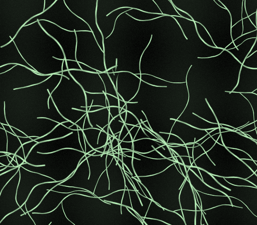
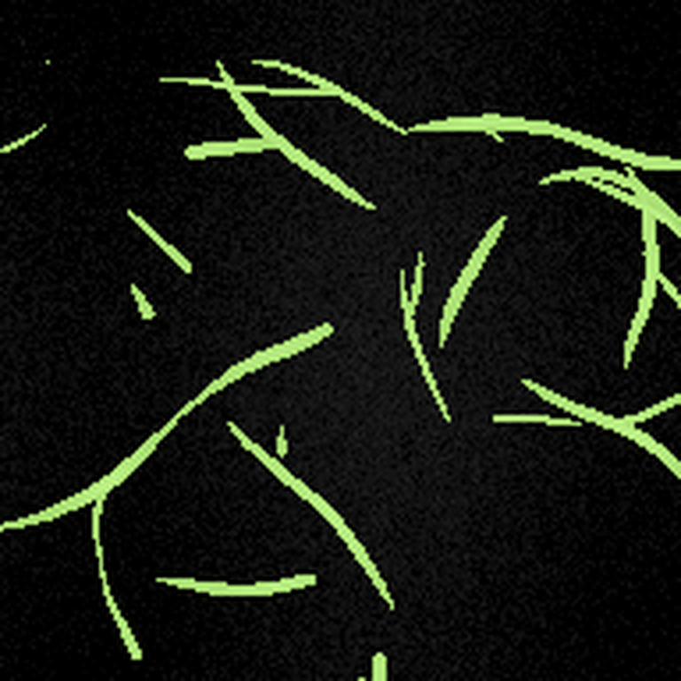
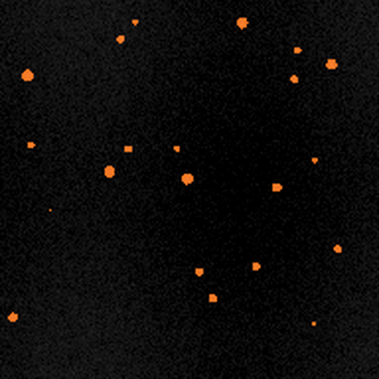

More data than
hands can trace.
Large 3D acquisitions become thousands of local decisions. A single good slice is only the beginning.
Turn complex 3D images into usable labels. Guide the segmentation, refine your model, and bring the full volume into view—all on your own infrastructure.

STRUCTURE → SIGNALOur instruments reveal extraordinary detail. Turning those images into usable labels still depends on painstaking expert work. The next breakthrough needs a better way through the data.
Large 3D acquisitions become thousands of local decisions. A single good slice is only the beginning.
A thin neurite and a bright molecular spot need different interpretations. Your model should adapt to the task.
Moving between annotation, training scripts and image files breaks the feedback loop. Keep it in one workspace.
Guide the segmentation. Inspect the depth. Keep the corrections that matter. MorphoPilot brings the entire annotation loop into your browser.
Generated input and known reference labels. This preview does not run a segmentation model.
Drag to compare ↔Browse Z without losing the image. Adjust brightness and contrast without changing your source data.
Positive and negative points, boxes, scribbles, lassos, and direct mask corrections.
Confirm your masks, fine-tune the category model, and use the updated weights on the next image.
From a large upload to a complete segmentation, every step belongs to the same system. Your data, annotations and model history stay connected.
Upload a single-channel 3D image. MorphoPilot splits it into annotation tiles, keeps their original coordinates, and saves your work in a persistent data library.
Training uses image + binary mask pairs · Review shows a colored reference overlay · Synthetic examples
Start with a pretrained interactive segmentation model. Add a separate Auto stem to create a path from expert-guided annotation to image-only segmentation.
The original prompt pathway takes the image and your interactions. Confirmed masks become training data. The Auto stem stays inactive during this stage.
Shared features, separate inputs.
Auto training can also change the shared network.
From neural connectivity to spatial molecular patterns, the opportunity starts with reliable segmentation. Give each data type its own model—and room to evolve.

Neuroscience workflows · Neurite-like structures
Explore branching geometry with a reproducible 3D fixture, then bring your own microscopy.
Spatial biology workflows · Spot-like structures
Start with generated puncta to test the workflow. Keep your spot data in its own category.Cell, Organ and custom categories are ready for your uploads and independent training. These are expansion paths, not benchmarked results in the included synthetic examples.
↗An open research workflow with reproducible synthetic examples. Test uploads, tiling and annotation locally, then connect your own images and compatible model weights.
Every included fixture is a true ZYX volume, with geometric references provided separately.
The 384 × 384 branching fixture becomes four default 192 × 192 annotation tiles.
Coordinate-aware tiling, saved annotations, explicit review and merged mask export.
Reproducible by design. All images on this website are synthetic procedural fixtures, and all colored overlays are known geometric references. They illustrate the workflow, not model performance. This release includes no private research data or pretrained weights.
Deploy the annotation workspace on your own GPU server. Open it from a browser. Keep images, annotations and model checkpoints together on persistent storage.
Open-source code. Local data. Your choice of infrastructure.
Clicks guide the current segmentation. Model weights update when you explicitly confirm the annotation and start fine-tuning. Only eligible, confirmed training data from that category is used.
Yes. The added Auto stem supports image-only inference after conversion and training on reviewed image–mask pairs. Prompt fine-tuning and Auto training are separate stages. Evaluate your Auto checkpoint on data withheld from training before relying on its outputs.
Yes. Upload single-channel ZYX TIFF, BigTIFF, NPY or NPZ volumes. The platform creates tiles, saves their locations, and lets you annotate and confirm them individually. Review all tiles to export the merged mask at the original volume dimensions.
This is an open-source research platform, not a clinically validated device. Project-generated code and synthetic assets are released under Apache 2.0. Upstream components and downloaded model weights retain their own licenses. No weights or private research datasets are bundled.
TEACH THE MODEL. REVEAL THE STRUCTURE.